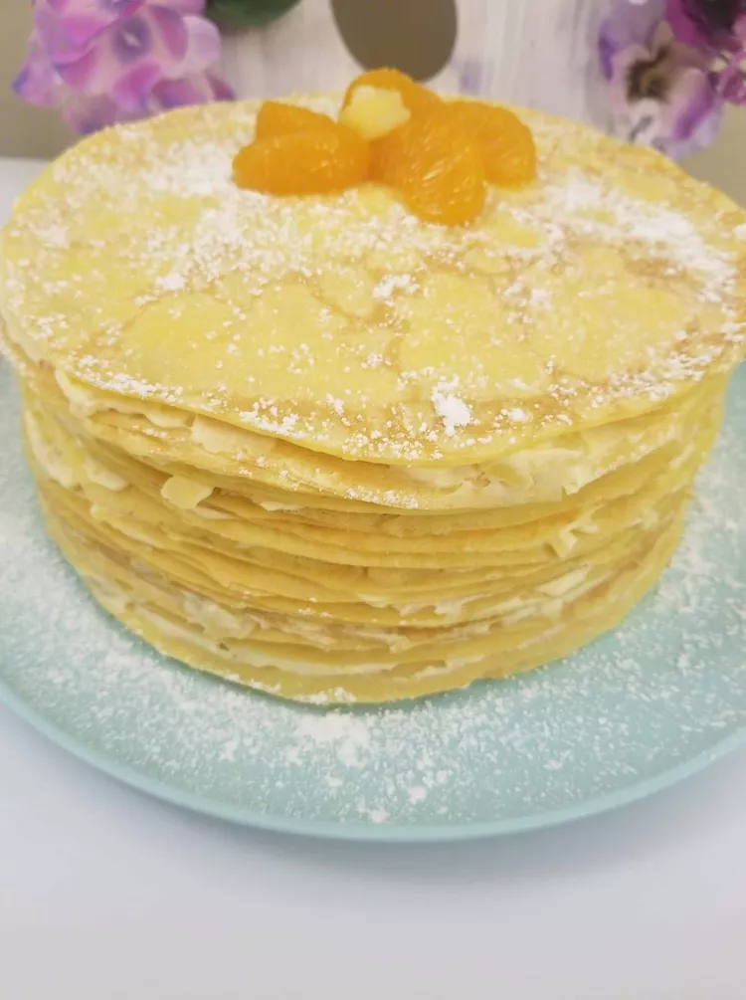

Crepe Recipe

How to make Crepes
In this recipe you will learn how to make very nice and fluffy Crepes
Ingredients
Crepes:
-
1 ½ cups milk
-
½ cup orange juice
-
4 large eggs
-
3 tablespoons unsalted butter, melted
-
1 teaspoon vanilla extract
-
1 ½ cups all-purpose flour
-
1 tablespoon white sugar
1 tablespoon grated orange zest
-
½ teaspoon salt
Filling:
- 1 pint heavy cream
- ¼ cup white sugar
- 1 (3.4 ounce) package instant vanilla pudding mix
- 1 (8 ounce) can crushed pineapple, drained
Directions
Step 1
- Add crepe ingredients to a blender in the following order: milk, orange juice, eggs, melted butter, vanilla,
flour, sugar, orange zest, and salt. Blend until smooth, 15 to 20 seconds.
Step 2
- Refrigerate batter for at least 30 minutes, up to overnight.
Step 3
- Preheat a nonstick 8-inch pan over medium heat. Add 1/4 cup batter to the hot pan. Immediately move the pan
from side to side to form batter into an even circle. Cook for 1 to 2 minutes per side. Remove to a plate
and repeat to cook remaining crepes.
Step 4
- Whip cream and sugar for filling with an electric mixer until stiff peaks form. Add instant pudding mix and
blend until well combined. Mix in drained pineapple.
Step 5
- Assemble cake by placing one crepe on a serving plate. Use a spoon to spread 1 tablespoon filling into a
thin layer over the crepe. Continue layers with remaining crepes and filling.